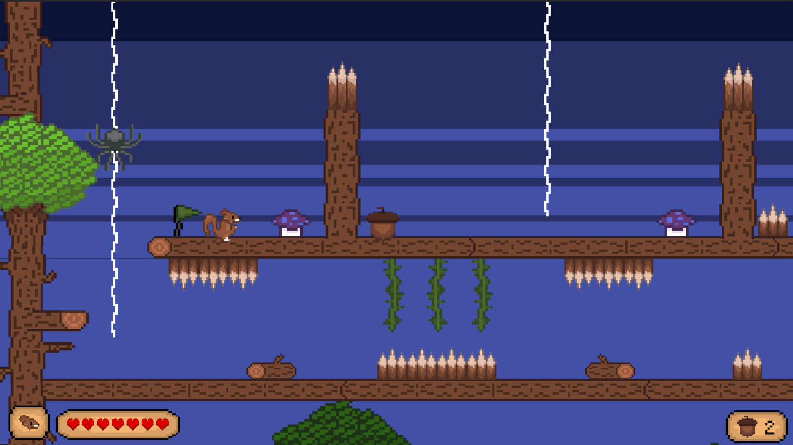
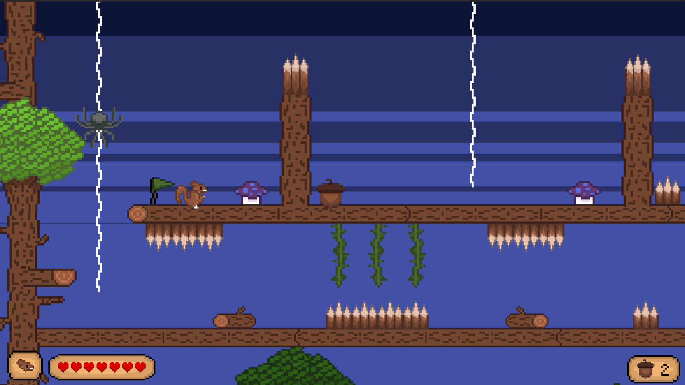

OVERVIEW


 


Platform and puzzle your way to the Golden Acorn with your squirrel bros!
-

3 Weeks (2024)
-

Individual
Main Features
 Controlling two characters at once to solve puzzles.
Controlling two characters at once to solve puzzles. Platforming essentials such as coyote time, variable jump height, and jump cut.
Platforming essentials such as coyote time, variable jump height, and jump cut. Reusable systems for trigger points
Reusable systems for trigger points
DEVELOPMENT
Initial Concepts
Old Pitch: To become the Squirrel King, players must complete three distinct trials of patience, mind, and agility to earn badges and reach the treetop, while avoiding hazards that lead to defeat.
Goals: Have precision platforming, some simple puzzles, and a bit of combat. My main concept I was excited about was this weapon and traversal item, although it was somewhat complex for three weeks.
Mechanics: Running, jumping, climbing, attacking for core abilties. For puzzles, the player would breifly take control of two characters at the same time.
Adjusted Approach
New Pitch: Play as one of many squirrel brothers working together to claim the legendary Golden Acorn! Secure your share of the ultimate prize by solving puzzles, avoiding traps, and navigating platforming sections.
Adjustments: Realizing the weapon concept and combat ideas were overscoped for the time budget, I decided to focus on more movement abilties and a good way to incorporate them into puzzles. Controlling two squirrels at once allowed me to use the movement mechanics as forms of puzzles too, reducing the feature workload.
Narrative: With no combat and little time, the three trials became difficult. So, I still had two planned sections to emulate the platforming and puzzle trials, but added the golden acorn as the narrative ending for now instead.
Project Timeline
Week 1
Initial concept development, core mechanics prototyping, and basic art style exploration.
Week 2
Level design blockouts, UI/UX mockups, and integration of player movement system.
Week 3
Bug fixing, polish, sound integration, and final asset implementation for the vertical slice.
How Would A Squirrel Move?
My goal for the player was to have responsive movement with vertically-focused actions to simulate the squirrels climbing up trees. I implemented platforming essentials such as jump height, coyote time, and position-based camera movement.
- Vines: Attach and climb to reach new platform heights.
- Tree Entrances: Narrative-friendly level traversal without new screen loads.
- Bouncy Mushrooms: Provide consistent vertical force for obstacle clearing, letting players focus on jump timing.
View PlayerController Script
Designing Puzzles for Two
Having this core mechanic of simultaneous control over two squirrels created unique problem-solving opportunities. I was able to reuse my previously taught features (movement, enemies, etc.) and only introduce a lever and door as a roadblock for each puzzle.
- Design Challenge: Creating situations requiring double precision (platforming, timing) or opposite-direction movement for two controlled squirrels.
- Player Experience Focus: Ensuring player understanding and preventing them from getting lost, stuck or squirrels entangled.
- My Solution: Created distinct, separate sections for these puzzles, with squirrels operating in smaller, isolated areas.
One System for Triggers
Initially, I designed a checkpoint system to complement the puzzles and enemy encounters, opting for this over invincibility frames (i-frames) after damage. I soon recognized that I was using separate triggers for checkpoints, puzzles, and dialogue.
This led me to develop a unified trigger point system. I consolidated all trigger handling into a single script, using Boolean flags to dictate specific actions. Additionally, I assigned unique indexes to certain triggers, adding them to respective arrays for efficient referencing within the code. Although, I could enhance it further by using enums to be more scalable.
View Trigger Point Script
Challenges & Cut Content
- Creating a smooth camera system across diverse player movements in tight spaces
- Making tough decisions to cut fun, complex features due to time constraints
- Designing progressive puzzles that taught players without frustration, even with multiple moving parts
- Moving Platform Bird: Removed due to conflicts with other movement abilities and overall unresponsiveness
- Hawk Enemy: Scrapped as its climbing knockdown mechanic caused collision detection issues with existing climbing tech
- Throwable Stick: Cut because it added complexity and caused confusion with friendly puzzle squirrels
Why Pixel-Art?
I love it! And it makes sense for the 2D gameplay and length of project development time.
My main process consisted of drawing something simple to start that just represented what I wanted, before iterating several times to find a good fit. I researched color theory and experimented with different palettes too.
Aseprite Workflow Timelapse
REFLECTION
This project highlighted the importance of early design pillars, which I defined halfway through to focus on movement, platforming, and puzzles, greatly simplifying later decisions. I also adopted a new, effective documentation method, recording design thoughts, solutions, and media for every major problem. Despite missing audio and more levels, the project successfully introduced mechanics and built challenging puzzles, serving as a solid tutorial foundation.